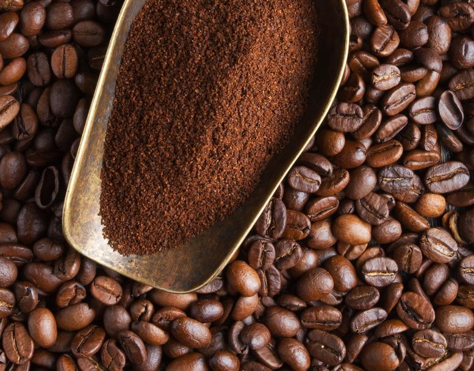

Sejarah & Jenis Kopi
Setiap cangkir kopi di Le Petit Ranéd dibuat dengan cinta — dari biji pilihan hingga sentuhan akhir yang sempurna. Kami percaya bahwa kopi terbaik selalu datang dari hati.
Read More

Jenis kopi yang mendunia
Nikmati suasana hangat yang kami ciptakan untuk menemani pagimu. Karena setiap hari pantas diawali dengan aroma kopi yang menenangkan.
Read More